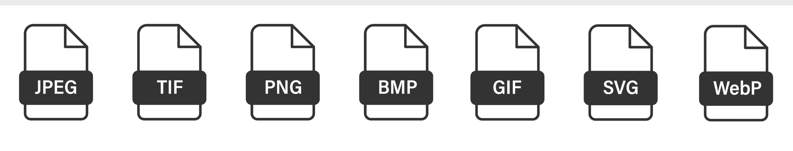

Bij bestandsformaten gaat het om het opslaan en organiseren van afbeeldingen, er bestaan verschillende soorten bestandsformaten. En zo heeft elk bestandformaat zijn eigen indeling en naam. Het is belangrijk om het juiste bestandsformaat te kiezen, zodat de gegevens zo effectief mogelijk worden opgeslagen. Sommige formaten gebruiken ook de inhoud van en bestand hangt af van het formaat. Voorbeelden van bestandsformaten zijn: JPG, PNG, GIF en meer.
Bitmapafbeeldingen bestaan uit een rooster pixels,ze hebben een vaste resolutie en een vast aantal pixels. Door het inzoomen in de foto worden de pixels soms zichtbaar en wordt de foto dus minder scherp, ook het bewerken van bitmapafbeeldingen zorgt voor een lagere beeldkwaliteit.
Vectorafbeeldingen worden gemaakt door wiskundige vergelijkingen, die de foto tot stand brengen. Een vectorafbeelding, zoals de naam al zegt gebruikt vectoren in plaats van pixels zoals de bitmapafbeeldingen. Een groot verschil tussen vectorafbeeldingen en bitmapafbeeldingen is dat vectorafbeeldingen altijd scherp zullen blijven, omdat ze geen vaste resolutie hebben.
Ook audiogegevens hebben verschillende bestandformaten zoals: MP3, AAC, FLAC en meer. Elk formaat heeft zijn eigen geluidskwaliteit en compressie. Vaak zijn bestanden met een goede audiokwaliteit groter, dit komt door een hogere bitdiepte en samplefrequentie. Ook hebben audiobestanden verschillende soorten kanalen.
